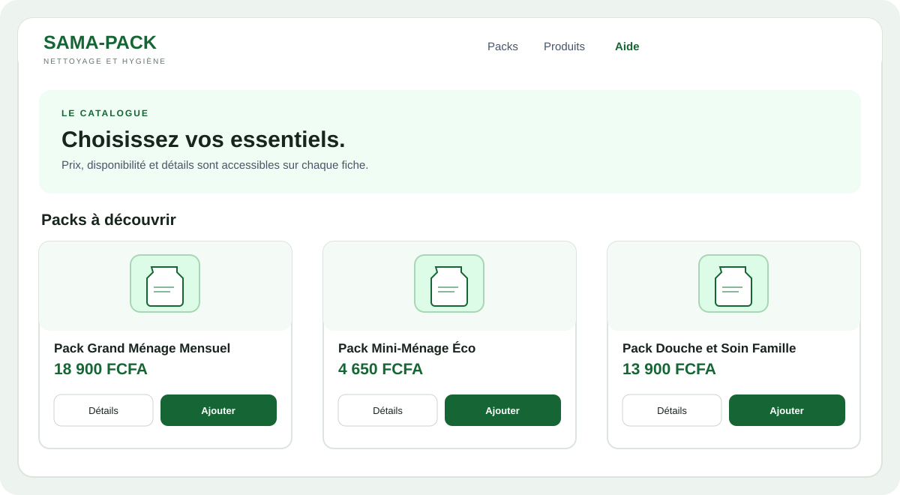

01
Choisissez vos packs ou vos produits
Parcourez Packs pour découvrir nos sélections prêtes à commander ou Produits pour acheter des articles à l’unité. Le prix et la disponibilité figurent sur les fiches.
- Utilisez la recherche ou le filtre par catégorie.
- Ouvrez Détails pour consulter la description et les caractéristiques.
- Ajoutez au panier les articles disponibles dont le prix est confirmé.
